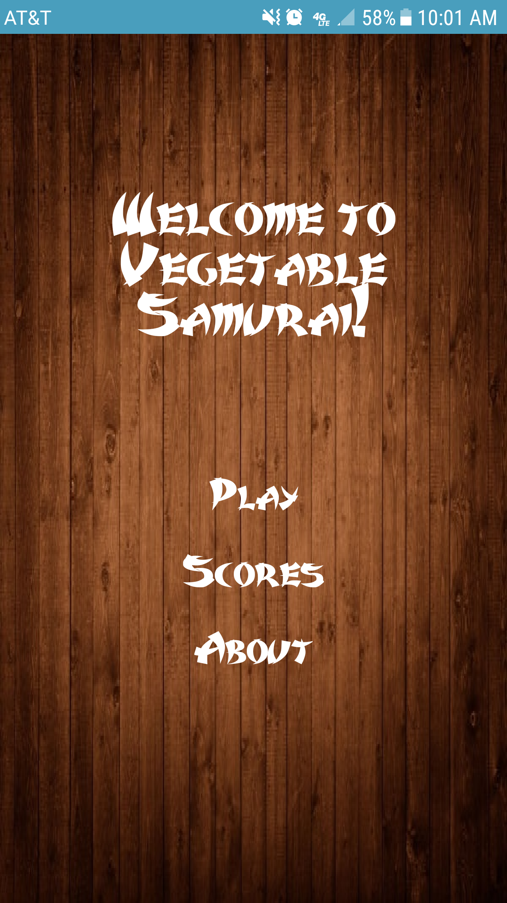
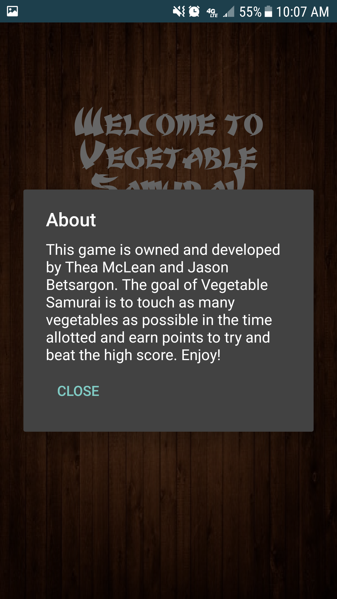
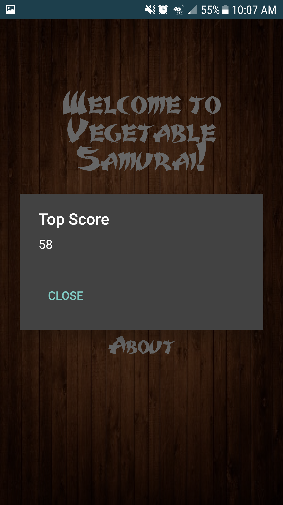
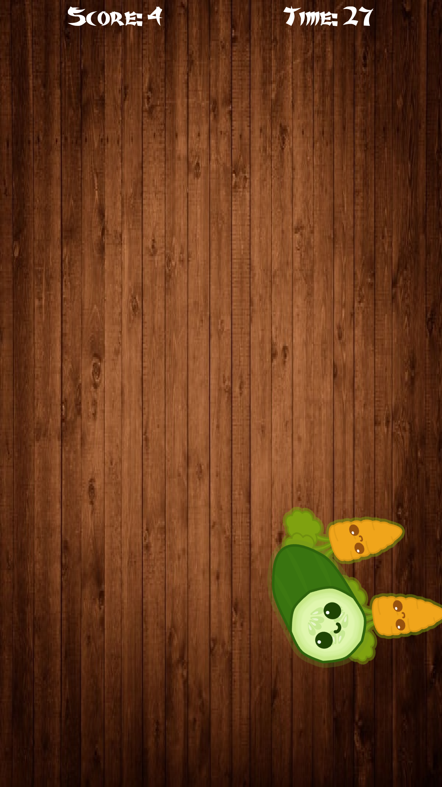
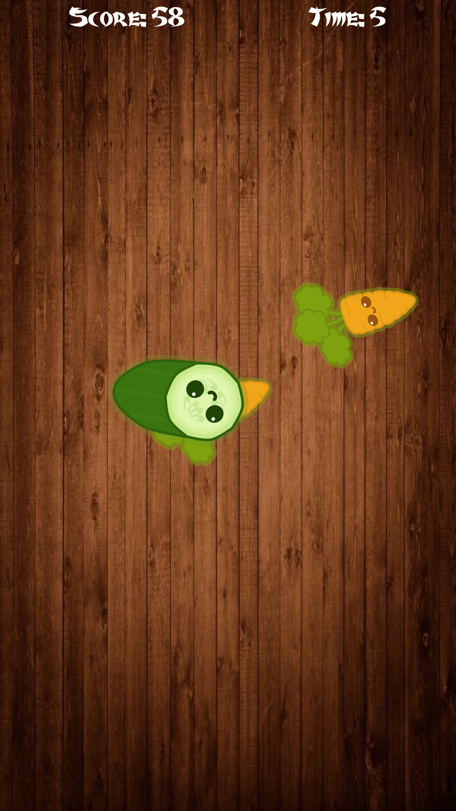
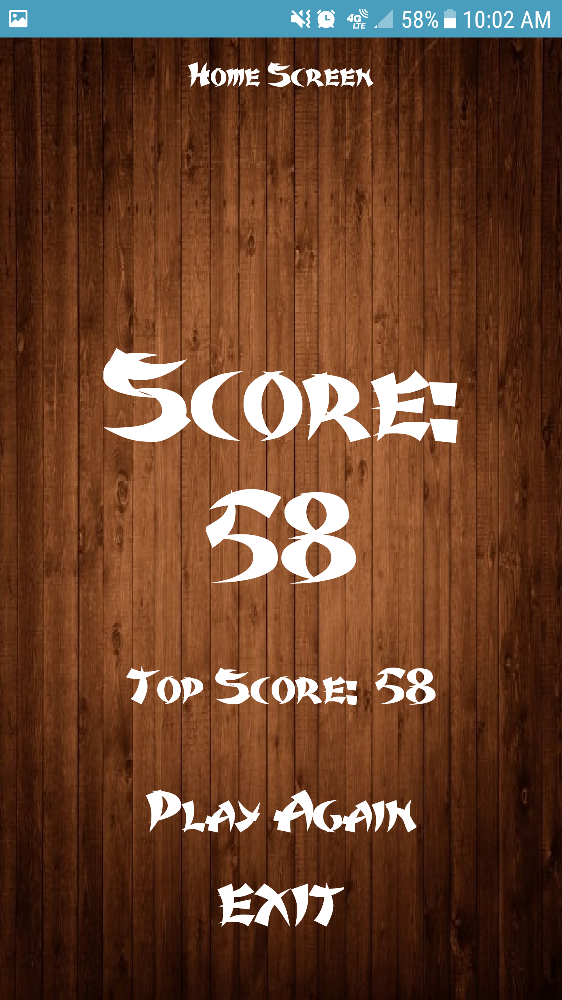

Vegetable Samurai
GitHub Link for .aia file.This application, for android devices, was programed usuing Thunkable. The application is a simple game that allows you to tap on vegetables as fast as you can within a certain time limit to reach the highest score.
My main focus in the development of this application was the functionality of the vegetables and their interaction with the player and the calculations being made to update the score.
The most difficult part of developing this project was solving bugs with the vegetables dissapearance and trajectory. I also designed the branding screen.
Below are screenshots of the entire code of the program.
     